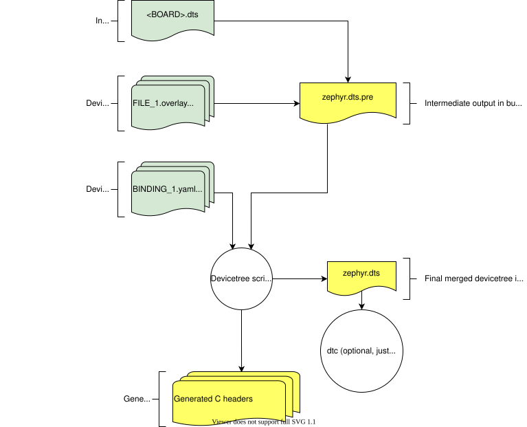

Input and output files
This section describes the input and output files shown in the figure in Scope and purpose in more detail.

Devicetree input (green) and output (yellow) files
Input files
There are four types of devicetree input files:
sources (
.dts)includes (
.dtsi)overlays (
.overlay)bindings (
.yaml)
The devicetree files inside the zephyr directory look like this:
boards/<ARCH>/<BOARD>/<BOARD>.dts
dts/common/skeleton.dtsi
dts/<ARCH>/.../<SOC>.dtsi
dts/bindings/.../binding.yaml
Generally speaking, every supported board has a BOARD.dts file
describing its hardware. For example, the reel_board has
boards/phytec/reel_board/reel_board.dts.
BOARD.dts includes one or more .dtsi files. These .dtsi files
describe the CPU or system-on-chip Zephyr runs on, perhaps by including other
.dtsi files. They can also describe other common hardware features shared by
multiple boards. In addition to these includes, BOARD.dts also describes
the board’s specific hardware.
The dts/common directory contains skeleton.dtsi, a minimal
include file for defining a complete devicetree. Architecture-specific
subdirectories (dts/<ARCH>) contain .dtsi files for CPUs or SoCs
which extend skeleton.dtsi.
The C preprocessor is run on all devicetree files to expand macro references,
and includes are generally done with #include <filename> directives, even
though DTS has a /include/ "<filename>" syntax.
BOARD.dts can be extended or modified using overlays. Overlays are
also DTS files; the .overlay extension is just a convention which makes
their purpose clear. Overlays adapt the base devicetree for different purposes:
Zephyr applications can use overlays to enable a peripheral that is disabled by default, select a sensor on the board for an application specific purpose, etc. Along with Configuration System (Kconfig), this makes it possible to reconfigure the kernel and device drivers without modifying source code.
Overlays are also used when defining Shields.
The build system automatically picks up .overlay files stored in
certain locations. It is also possible to explicitly list the overlays to
include, via the DTC_OVERLAY_FILE CMake variable. See
Set devicetree overlays for details.
The build system combines BOARD.dts and any .overlay files by
concatenating them, with the overlays put last. This relies on DTS syntax which
allows merging overlapping definitions of nodes in the devicetree. See
Example: FRDM-K64F and Hexiwear K64 for an example of how this works (in the context of
.dtsi files, but the principle is the same for overlays). Putting the
contents of the .overlay files last allows them to override
BOARD.dts.
Devicetree bindings (which are YAML files) are essentially glue. They describe
the contents of devicetree sources, includes, and overlays in a way that allows
the build system to generate C macros usable by device drivers and
applications. The dts/bindings directory contains bindings.
Scripts and tools
The following libraries and scripts, located in scripts/dts/, create output files from input files. Their sources have extensive documentation.
- dtlib.py
A low-level DTS parsing library.
- edtlib.py
A library layered on top of dtlib that uses bindings to interpret properties and give a higher-level view of the devicetree. Uses dtlib to do the DTS parsing.
- gen_defines.py
A script that uses edtlib to generate C preprocessor macros from the devicetree and bindings.
In addition to these, the standard dtc (devicetree compiler) tool is run on
the final devicetree if it is installed on your system. This is just to catch
errors or warnings. The output is unused. Boards may need to pass dtc
additional flags, e.g. for warning suppression. Board directories can contain a
file named pre_dt_board.cmake which configures these extra flags, like
this:
list(APPEND EXTRA_DTC_FLAGS "-Wno-simple_bus_reg")
Shield directories can contain a file named pre_dt_shield.cmake which
has the same functionality as the aforementioned pre_dt_board.cmake.
Output files
These are created in your application’s build directory.
Warning
Don’t include the header files directly. Devicetree access from C/C++ explains what to do instead.
<build>/zephyr/zephyr.dts.preThe preprocessed DTS source. This is an intermediate output file, which is input to
gen_defines.pyand used to createzephyr.dtsanddevicetree_generated.h.<build>/zephyr/include/generated/zephyr/devicetree_generated.hThe generated macros and additional comments describing the devicetree. Included by
devicetree.h.<build>/zephyr/zephyr.dtsThe final merged devicetree. This file is output by
gen_defines.py. It is useful for debugging any issues. If the devicetree compilerdtcis installed, it is also run on this file, to catch any additional warnings or errors.